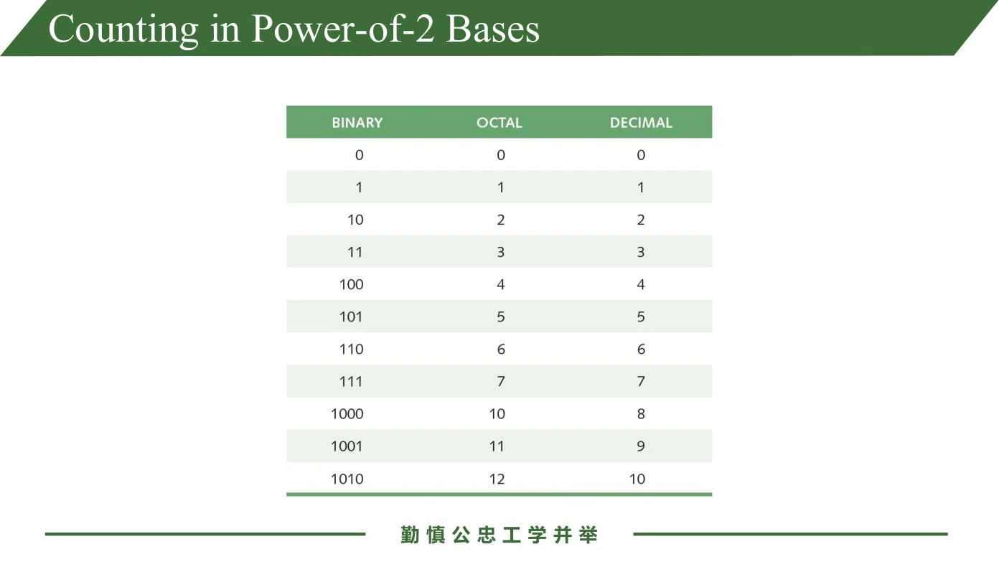
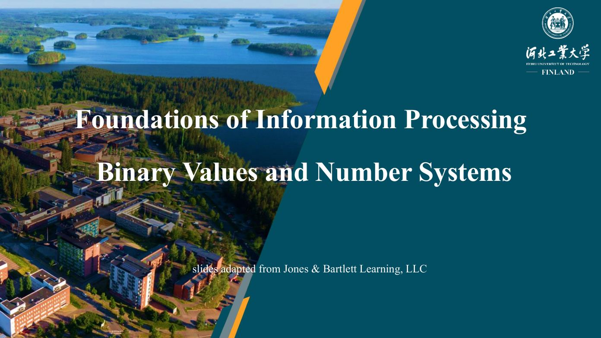

HDD5020 信息处理基础（计算机导论） · 第 02 / 12 讲
Week 2 · 数制、位置记数法与进制转换
Binary Values and Number Systems
所属章节：第 2 章 数制与数据表示
资料来源 · 2 项 / 已附 0 项
Week2- Number systems/Lecture2.pdf未附原文件Week2- Number systems/Exercise1.pdf未附原文件
未附文件仅列原始名称；版本与核对日期由维护者登记。
本节定位
第 1 讲说计算机只认 0 和 1，但没说清「一个数怎么只用 0 和 1 写出来」。这一讲就干这件事：先把「数」分成几类，再讲位置记数法（positional notation）这一个统一框架，然后用它把任意进制与十进制互相转换，最后落到二进制算术与字节、字长。
位置记数法是全课最省力的一个工具：只要会「按位权展开」，二、八、十、十六乃至十三进制都用同一套式子算。反过来，只要会「除基取余」，任何十进制数都能写成任意进制。两个方向各一个公式，覆盖了本周全部计算题。
本讲与前后两讲的关系：第 1 讲说「一切信息都变成 0/1」，本讲说「数怎么变成 0/1」，第 3 讲说「负数与小数怎么变成 0/1」。三讲连起来，才构成完整的「数据表示」。
学完本讲你应当能够：
- 说出自然数、负数、整数、有理数的定义与包含关系
- 写出位置记数法的展开式，并解释基与位权的作用
- 把任意进制的数按权展开换算成十进制（含十三进制这类非主流进制）
- 用除基取余法把十进制数换算成二、八、十六进制，并会验算
- 判断一个数字串在某个进制下是否合法
- 利用 2^3 与 2^4 的关系，做二进制与八进制、十六进制之间的分组互换
- 做二进制加法（含连续进位）与减法（含借位）
- 说明字节、字长的含义，以及 32 位机与 64 位机的区别
一、先把「数」分类
1.1 四类数
课件开篇先做分类，原因是后面讲编码时要针对不同类别设计不同格式：整数用补码、小数用浮点、有理数可能要用分数对表示。
| 类别 | 课件定义 | 例子 | 备注 |
|---|---|---|---|
| 自然数（natural numbers） | 零，以及由它反复加 1 得到的数 | 100, 0, 45645, 32 | 从 0 开始，不含负数 |
| 负数（negative numbers） | 小于 0、带负号的值 | −24, −1, −45645, −32 | 符号是人加的，机器里没有负号 |
| 整数（integers） | 自然数或负数 | 249, 0, −45645, −32 | 自然数与负数的并集 |
| 有理数（rational numbers） | 整数，或两个整数的商 | −249, −1, 0, 3/7, −2/5 | 能写成分数的一切数 |
包含关系要清楚：自然数 ⊂ 整数 ⊂ 有理数。注意课件把 0 算作自然数，这点与某些教材不同，答题按课件口径。
1.2 为什么现在要分类
因为「负号」在硬件里不存在。第 3 讲会让你看到：想让机器表示 −5，只能挪用最高位当符号位，或用补码把减法变成加法。而 3/7 这种有理数，机器通常存成两个整数（分子、分母）或用浮点近似——这正是第 3 讲 0.1 无法精确表示的原因。
二、位置记数法
2.1 一个看似简单的问题
课件用一个提问开场：642 里到底有多少个「1」？它给了三个候选答案：
600 + 40 + 2 ?
384 + 32 + 2 ?
1536 + 64 + 2 ?三个答案分别对应按十进制读、按八进制读、按十六进制读。同一个符号串，换了基就换了值——这就是位置记数法的全部秘密。
2.2 基决定两件事
课件定义：一个数的基，决定它有多少种不同的数字符号，以及每个位置上的值（"The base of a number determines the number of different digit symbols (numerals) and the values of digit positions"）。
| 基 R | 可用数字符号 | 符号个数 | 相邻位权之比 |
|---|---|---|---|
| 2（二进制） | 0, 1 | 2 | 2 |
| 8（八进制） | 0–7 | 8 | 8 |
| 10（十进制） | 0–9 | 10 | 10 |
| 13（十三进制） | 0–9 再加三个符号 | 13 | 13 |
| 16（十六进制） | 0–9 与 A–F | 16 | 16 |
2.3 展开式与公式
课件把 642 按位权展开，并强调指数表示的是位置：
6 × 10^2 = 6 × 100 = 600
4 × 10^1 = 4 × 10 = 40
2 × 10^0 = 2 × 1 = 2
= 642 (base 10)一般公式（课件原式）：
d_n × R^(n−1) + d_(n−1) × R^(n−2) + … + d_2 × R^1 + d_1 × R^0
三个符号要认准：R 是基，n 是位数，d 是第 i 位上的数字。课件从左边开始数位数（最左位是第 n 位），与编程里从 0 开始数相反，做题时以「位权」为准，别被下标绕住。
更常用的等价写法：把最右位的位权记作 R^0，往左每移一位指数加 1。于是小数点左边第 k 位的位权是 R^(k−1)；第 3 讲讲小数时，指数会变成负数。
2.4 换成十三进制会怎样
课件故意用了一个怪基来证明公式的普适性：
6 × 13^2 = 6 × 169 = 1014
4 × 13^1 = 4 × 13 = 52
2 × 13^0 = 2 × 1 = 2
= 1068 (base 10)所以 642₁₃ = 1068₁₀。这个例子说明公式里除了 R 没有别的魔法数，R 换成几都能算。考试若给一个不常见的基（13、12、7、5），照这条流程走即可。
…, R^3, R^2, R^1, R^0，再把每一位数字写在其下方相乘，最后竖式相加。R = 16 时位权是 1, 16, 256, 4096, 65536；R = 8 时是 1, 8, 64, 512, 4096。背下这两列，换算速度能快一倍。三、这门课真正要用的几个进制
3.1 十进制与二进制
十进制是基 10，有 10 个数字符号 0–9；二进制是基 2，只有 2 个符号 0 和 1。课件在讲二进制时补了一条非常关键的合法性规则。
3.2 合法性规则（高频考点）
课件原话：一个数若要存在于某个基中，它只能含该基的数字，范围从 0 到（但不含）该基（"range from 0 up to (but not including) the base"）。
于是课件追问：122、198、178、G1A4 分别可能在哪些基里？
| 数字串 | 出现的最大符号 | 可能的最小基 | 判断依据 |
|---|---|---|---|
| 122 | 2 | 3 | 含 2，故基必须大于 2 |
| 198 | 9 | 10 | 含 9，故基必须大于 9 |
| 178 | 8 | 9 | 含 8，故基必须大于 8 |
| G1A4 | G（第 17 个符号） | 17 | 需要 A–G 共七个字母符号 |
这条规则在考试里常以「这个数能不能是八进制」的形式出现：看到数字 8 或 9 就一定不是八进制；看到字母，基一定大于 10。
3.3 大于 10 的基怎样写数字
课件说：用不同的符号表示 10 及以上的数字。基 16 有 16 个符号：
0, 1, 2, 3, 4, 5, 6, 7, 8, 9, A, B, C, D, E, F对应关系必须背下来：A=10, B=11, C=12, D=13, E=14, F=15。八进制不需要字母，因为 0–7 已经够用。
10 在十六进制里是「十六」，不是「十」；F 是「十五」。换算时先把字母换成数值，再乘位权。四、其他进制 → 十进制：按权展开
4.1 三个课件算例
八进制 642 → 十进制：
6 × 8^2 = 6 × 64 = 384
4 × 8^1 = 4 × 8 = 32
2 × 8^0 = 2 × 1 = 2
= 418 (base 10)十六进制 DEF → 十进制：先把字母换成数值 D=13、E=14、F=15，再展开：
D × 16^2 = 13 × 256 = 3328
E × 16^1 = 14 × 16 = 224
F × 16^0 = 15 × 1 = 15
= 3567 (base 10)二进制 1101110 → 十进制：七位，位权从 2^6 到 2^0：
1 × 2^6 = 1 × 64 = 64
1 × 2^5 = 1 × 32 = 32
0 × 2^4 = 0 × 16 = 0
1 × 2^3 = 1 × 8 = 8
1 × 2^2 = 1 × 4 = 4
1 × 2^1 = 1 × 2 = 2
0 × 2^0 = 0 × 1 = 0
= 110 (base 10)4.2 二进制的速算法：只加「有 1 的那些位权」
二进制展开不必逐位乘 0 或 1，直接看哪一位是 1，把该位的位权加起来即可。位权表要背：
| 位 | 2^7 | 2^6 | 2^5 | 2^4 | 2^3 | 2^2 | 2^1 | 2^0 |
|---|---|---|---|---|---|---|---|---|
| 位权 | 128 | 64 | 32 | 16 | 8 | 4 | 2 | 1 |
例：10110111 = 128 + 32 + 16 + 4 + 2 + 1 = 183。这比重複乘 0/1 快得多。
4.3 通用解题模板
- 从右往左，在第 i 位（从 0 计）写下位权 R^i
- 把该位的符号换成它的数值（字母换数字）
- 数值 × 位权，得到这一位的贡献
- 所有贡献相加，结果就是十进制值
- 若原数带小数部分，小数点右边第 1 位位权是 R^(−1)，第 2 位是 R^(−2)，依此类推（见第 3 讲）
4.4 一个容易忽略的检查
按权展开的结果一定小于 R^n（n 为位数）。若算出 999 却说是三位八进制数，就一定错了——三位八进制最大只有 777₈ = 511。这类「量级检查」在考试里能立刻抓出乘错位权的错误。
五、二进制算术
5.1 加法只有四条规则
课件提醒：二进制只有两个数字符号 0 和 1。于是加法只有四种情况，其中 1 + 1 的结果是 0 并向左进 1：
| 算式 | 结果 | 进位 |
|---|---|---|
| 0 + 0 | 0 | 无 |
| 0 + 1 | 1 | 无 |
| 1 + 0 | 1 | 无 |
| 1 + 1 | 0 | 向高位进 1 |
连续进位是最容易算错的地方：1 + 1 + 1 = 1 并进 1（因为 3 = 11₂），1 + 1 + 1 + 1 = 0 并进 10（即 4）。做竖式时把进位写在小横线上方，逐列处理。
5.2 课件算例
进位: 1 0 1 1 1 1 1
1 0 1 0 1 1 1
+ 1 0 0 1 0 1 1
---------------
1 0 1 0 0 0 1 0验算：1010111₂ = 87，1001011₂ = 75，和 162 = 10100010₂。十进制验算是检查二进制竖式的最好办法，值得花十秒。
5.3 减法与借位
课件用 borrowing 引入减法，规则是借 1 当 2：向高位借一个 1，到本位就变成 2。
0 1 2 (借位标记)
0 2
1 0 1 0 1 1 1
- 1 1 1 0 1 1
---------------
0 0 1 1 1 0 0验算：1010111₂ = 87，111011₂ = 59，差 28 = 0011100₂。前导 0 不影响值，但写成固定位宽（这里是 7 位）便于对齐。
5.4 为什么硬件喜欢二进制
十进制减法的借位是「借 1 当 10」，二进制是「借 1 当 2」——规则同样简单，但二进制的每条规则只涉及 0/1 两种取值，用逻辑门就能实现（第 6 章讲逻辑门）。这也是第 3 讲能把减法变成加法的前提：只要加法器够快，减法就不需要单独的电路。
六、2 的幂进制之间：分组互换
6.1 为什么可以分组
因为 8 = 2^3 且 16 = 2^4。三个二进制位恰好能表示 0–7，正好是一个八进制符号；四个二进制位恰好能表示 0–15，正好是一个十六进制符号。于是这三种进制之间的转换不需要除法，只需切段。这就是课件那句「解释 2 的幂进制对计算的重要性」的含义。
6.2 二进制 → 八进制：从右往左三位一组
10101011
10 101 011 ← 从右往左每 3 位切一刀
2 5 3
结果：253 (base 8)最左边只剩 2 位，要在前面补 0 凑成 010，补出的 0 不影响值。三组分别读作 2、5、3。
6.3 八进制 → 二进制：每个符号换 3 位
2 5 3
010 101 011
→ 101010116.4 二进制 → 十六进制：从右往左四位一组
10101011
1010 1011 ← 每 4 位切一刀
A B
结果：AB (base 16)6.5 十六进制 → 二进制：每个符号换 4 位
A B
1010 1011
→ 101010116.6 八进制与十六进制互转：经二进制中转
两者之间不存在 3 位与 4 位的整倍数关系，所以必须借二进制当中转站。课件给了两个方向：
十六进制 → 八进制：AB → 1010 1011 → 10 101 011 → 253
八进制 → 十六进制：253 → 10 101 011 → 1010 1011 → AB两次转换方向相反，切段宽度从 4 变 3 或从 3 变 4，这就是全部技巧。
6.7 分组三原则
- 一律从右往左切（低位对齐），从左切会错位
- 最左一组不足 3 位（或 4 位）时，在最左端补 0
- 每组独立换算成一个符号，组间不要跨位借数
- 十六进制 → 二进制时每组必须写满 4 位，如 5 要写 0101 而不是 101
七、十进制 → 其他进制：除基取余
7.1 算法（课件给的流程）
核心是「除以基、记余数、商继续除、余数倒读」：
- 用目标基 R 去除这个十进制数，记下余数（这是最低位）
- 把商当作新的被除数，继续除以 R
- 重复到商为 0 为止
- 把余数从最后一个读到第一个（逆序），得到结果
为什么要逆序？第一次除出的余数是个位（最低位），最后一次除出的是最高位，正好与「从左往右写」相反。
7.2 十进制 → 八进制：1988
8 ) 1988 余 4
8 ) 248 余 0
8 ) 31 余 7
8 ) 3 余 3
0余数从下往上读：3 7 0 4，所以 1988₁₀ = 3704₈。
验算：3×512 + 7×64 + 0×8 + 4 = 1536 + 448 + 0 + 4 = 1988。验算不能省，它是唯一能立刻抓出「顺序读反」的办法。
7.3 十进制 → 十六进制：3567
16 ) 3567 余 15 → F
16 ) 222 余 14 → E
16 ) 13 余 13 → D
0余数逆序读：DEF，所以 3567₁₀ = DEF₁₆。这与第四节「DEF → 3567」互为逆运算，正好互相验证。
7.4 十进制 → 二进制：69
2 ) 69 余 1
2 ) 34 余 0
2 ) 17 余 1
2 ) 8 余 0
2 ) 4 余 0
2 ) 2 余 0
2 ) 1 余 1
0余数逆序读：1000101，所以 69₁₀ = 1000101₂。验算：64 + 4 + 1 = 69。
八、算盘：位置记数法的实物
课件在进制转换之间插入了一页算盘（abacus）：横梁上方的珠子表示 5 个单位，下方的珠子表示 1 个单位。
为什么讲算盘？因为它把位置记数法的两个要素都做成了实物：每一档是一个位（位权是 10 的幂），每档内的珠子表示该位的数字（上珠 5 加下珠 1–4，正好能拨出 0–9）。这也是「基决定符号数」的物理版本：一档最多表示 9，超过就要向左边一档进 1。
九、位、字节与字长
9.1 电压就是位
课件说：计算机的存储单位叫二进制位（binary digit，简称 bit）；低电压 = 0，高电压 = 1。并补了一句很实在的话：反过来定义也可以，但我们不需要关心哪种对应——只要两端一致就行。
这句话的含义是：位的物理载体可以是电压、磁化方向、光坑、电荷，抽象层面只要求「两个可区分状态」。所以第 1 讲说「两种状态可靠」比「十种状态」容易，这一页给出了它的物理来源。
9.2 字节与字长
课件定义：字节（byte）= 8 位。而一个字（word）包含多少位，决定了这台机器的字长（word length），字长通常是 8 的整数倍：32 位机、64 位机，等等。
| 术语 | 含义 | 典型值 |
|---|---|---|
| bit（位，b） | 最小单位，取值 0 或 1 | — |
| byte（字节，B） | 8 位为一字节 | 8 bits |
| word（字） | 机器一次处理的一组位 | 16 / 32 / 64 位 |
| word length（字长） | 字的位数，通常为 8 的倍数 | 32 位机、64 位机 |
字长的实际意义：它决定一次运算能并行处理多少位，也决定一个整数能有多大（32 位无符号上限约 42.9 亿，64 位则大到几乎用不完）。第 3 讲讲补码范围时会反复用到「n 位」这个参数，n 就是字长。
b 是 bit，B 是 byte，8 b = 1 B。宽带标称 100 Mb/s 与下载速度 12.5 MB/s 是同一个速率，别当成差 100 倍。第 4 章还会讲 KB 与 KiB 的差别。原版图页（源 PDF 插图页）




拓展深化 1.0 进位记数法的数学抽象与进制转换的代数原理
通过多项式 $N = \sum d_i b^i$ 与数学归纳法严格证明为什么整数“除基取余”与小数“乘基取整”具有数学完备性与唯一确定性。
1. 进位制的代数定义：任何基数 $b \ge 2$ 的非负整数 $N$ 均可唯一展开为关于基数 $b$ 的有限多项式：
其中数码 $d_i \in \{0, 1, \dots, b - 1\}$。将上式按 $b$ 提取公因式：
根据带余除法（Division Algorithm），$d_0 = N \bmod b$ 恰好是 $N$ 除以 $b$ 的余数，商为 $Q_1 = \lfloor N / b \rfloor$。对新商 $Q_1$ 重复执行除法即依次输出 $d_1, d_2, \dots$，直至商为 0。这严格证明了“除基取余、逆序排列”的代数必然性。
| English | 中文 | 说明 / 例句 |
|---|---|---|
| natural number | 自然数 | Zero and any number obtained by repeatedly adding one: 0, 32, 100. |
| negative number | 负数 | A value less than zero, written with a minus sign: −24, −1. |
| integer | 整数 | A natural number or a negative number: 249, 0, −32. |
| rational number | 有理数 | An integer or the quotient of two integers: 3/7, −2/5. |
| positional notation | 位置记数法 | The value of a digit depends on its position: 6 × 10^2 + 4 × 10^1 + 2 × 10^0. |
| base (radix) | 基 | Number of digit symbols and the ratio between neighbouring positions. |
| digit symbol | 数字符号 | A single numeral allowed in a base; base 16 uses 0–9 and A–F. |
| binary | 二进制 | Base 2, digits 0 and 1. |
| octal | 八进制 | Base 8, digits 0–7; one octal digit equals three binary bits. |
| hexadecimal | 十六进制 | Base 16, digits 0–9 and A–F; one hex digit equals four binary bits. |
| carry | 进位 | In binary 1 + 1 = 0 with a carry of 1 into the next position. |
| borrow | 借位 | Borrowing 1 from the next position gives 2 in the current position. |
| quotient and remainder | 商与余数 | Repeated division by the base; read the remainders bottom-up. |
| byte | 字节 | A group of 8 bits. |
| word length | 字长 | Number of bits in a machine word, usually a multiple of 8. |
642 分别当作十三进制与八进制，求十进制值，并说明差多少倍。按权展开（R = 13）：6×13^2 + 4×13^1 + 2×13^0 = 6×169 + 4×13 + 2 = 1014 + 52 + 2 = 1068。
按权展开（R = 8）：6×8^2 + 4×8^1 + 2×8^0 = 6×64 + 4×8 + 2 = 384 + 32 + 2 = 418。
两者相差 1068 − 418 = 650，约 2.55 倍。原因很直观：位权从 8 的幂换成 13 的幂，高位被放大得最厉害（169 对 64）。
这类题的关键是先确认基：同一符号串在不同基下是完全不同的数，写答案时务必标基，如 642₁₃。
10110111 转成十六进制、八进制与十进制，并用十进制结果互相验算。十六进制：从右往左四位一组 → 1011 | 0111 → B | 7 → B7。
八进制：从右往左三位一组 → 10 | 110 | 111 → 最左补 0 成 010 → 2 | 6 | 7 → 267。
十进制：只加有 1 的位权：128 + 32 + 16 + 4 + 2 + 1 = 183。
验算：B7₁₆ = 11×16 + 7 = 176 + 7 = 183；267₈ = 2×64 + 6×8 + 7 = 128 + 48 + 7 = 183。三个结果指向同一个值，说明切段没错。
注意八进制那一步：原数 8 位，8 ÷ 3 除不尽，最左只剩 2 位，必须补 0 才能读成 010（值 2）。漏补 0 会把这一组读错。
1010111₂ + 1001011₂ 与 1010111₂ − 111011₂，并用十进制验算。加法竖式（从最低位起，注意连续进位）：
1 0 1 0 1 1 1
+ 1 0 0 1 0 1 1
---------------
1 0 1 0 0 0 1 0逐位看：1+1 = 0 进 1；1+1+1 = 1 进 1；1+0+1 = 0 进 1；0+1+1 = 0 进 1；1+0+1 = 0 进 1；0+0+1 = 1；最高位 1+1 写成 10。结果 10100010₂。
十进制验算：87 + 75 = 162 = 128 + 32 + 2，与二进制一致。
减法（借 1 当 2）：
1 0 1 0 1 1 1
- 1 1 1 0 1 1
---------------
0 0 1 1 1 0 0十进制验算：87 − 59 = 28 = 16 + 8 + 4 = 11100₂，与 0011100 同值。
减法也可以用「加补数」做（第 3 讲）：87 + (−59)，把 −59 写成补码再加，结果相同，而硬件只需要加法器。
3567₁₀ 转成十六进制，再由它得到二进制与八进制，全部验算。第一步，除 16 取余：
3567 ÷ 16 = 222 余 15 → F
222 ÷ 16 = 13 余 14 → E
13 ÷ 16 = 0 余 13 → D余数逆序 → DEF₁₆。
第二步，展开成二进制：D=1101, E=1110, F=1111 → 110111101111₂。
第三步，三位一段成八进制：110 | 111 | 101 | 111 → 6 | 7 | 5 | 7 → 6757₈。
验算：DEF₁₆ = 13×256 + 14×16 + 15 = 3328 + 224 + 15 = 3567；6757₈ = 6×512 + 7×64 + 5×8 + 7 = 3072 + 448 + 40 + 7 = 3567。
这道题把本讲所有工具串了一遍：除基取余 → 四位展开 → 三位切段 → 按权展开验算。遇到「一数多转」的题都按这条链走。
- 把
777₈、7EC₁₆、101₂换算成十进制。 - 把
45₁₀、901₁₀、1066₁₀分别换算成二进制、八进制、十六进制。 - 把
10101001₂转成十六进制，把75₈转成二进制，把E7₁₆转成八进制。 - 判断
891能否分别是十进制、十二进制、十六进制中的数，并求三种情形下的十进制值。 - 计算
1110011₂ + 11001₂与1010110₂ − 101₂，用十进制验算。 - 某班有 37 名学生，要各分配一个互不相同的二进制编号，至少需要几位？
参考答案与思路
1. 777₈ = 7×64 + 7×8 + 7 = 448 + 56 + 7 = 511；7EC₁₆ = 7×256 + 14×16 + 12 = 1792 + 224 + 12 = 2028；101₂ = 5。注意 E=14、C=12。
2. 45 连除 2 得 101101₂（验算 32+8+4+1=45）；901 连除 8：余 5、0、6、1 → 1605₈（验算 512+384+0+5=901）；1066 连除 16：余 10(A)、2、4 → 42A₁₆（验算 4×256+2×16+10=1066）。
3. 10101001 四位一组 → A9；75₈ → 7=111、5=101 → 111101₂；E7₁₆ → 11100111 → 三位一组 011 100 111 → 347₈。
4. 891 只含 8、9、1，故基必须大于 9，三种都合法。十进制 891；十二进制 8×144 + 9×12 + 1 = 1152 + 108 + 1 = 1261；十六进制 8×256 + 9×16 + 1 = 2048 + 144 + 1 = 2193。若题目问「这些值的二进制表示里有多少个 1」，则 891 = 1101111011（8 个）、1261 = 10011101101（7 个）、2193 = 100010010001（4 个）。
5. 1110011₂ = 115，11001₂ = 25，和 140 = 10001100₂；1010110₂ = 86，101₂ = 5，差 81 = 1010001₂。
6. 需要 2^n ≥ 37。5 位只有 32 种（不够），6 位有 64 种 → 至少 6 位。若要留一个 0 号作未分配，仍需 38 个编号，6 位依旧够。
101 而不是 0101，会让整串错位。换算方法清单
任意进制 → 十进制（三步）
- 从右往左标出位权
R^0, R^1, R^2, … - 字母换成数值（A=10 … F=15）
- 每一位「数值 × 位权」后全部相加，结果即十进制值
十进制 → 任意进制（四步）
- 用基 R 除，记下余数
- 商继续除 R，直到商为 0
- 余数逆序排列
- 用按权展开验算（必做）
二进制 ↔ 八进制 ↔ 十六进制（三步）
- 八进制：从右往左每 3 位一组，最左不足补 0
- 十六进制：从右往左每 4 位一组，最左不足补 0
- 八 ↔ 十六：先展开成二进制，再按另一宽度重新切组
二进制加减检查表
- 加法：1+1 = 0 进 1，1+1+1 = 1 进 1
- 减法：借 1 当 2，借位后本位加 2 再减
- 两个操作数补成同样位宽再竖式对齐
- 用十进制重算一遍验算
| 源文件 | 位置 | 覆盖的知识点 |
|---|---|---|
| Week2- Number systems/Lecture2.pdf | p2 | 本周目标：数的类别、位置记数法、双向进制转换、2/8/16 的关系 |
| Week2- Number systems/Lecture2.pdf | p3–p4 | 自然数、负数、整数、有理数的定义与例子 |
| Week2- Number systems/Lecture2.pdf | p5–p9 | 642 的三种读法、基决定符号数与位权、展开式与公式、642₁₃ = 1068 |
| Week2- Number systems/Lecture2.pdf | p10–p12 | 十进制与二进制、合法性规则（122/198/178/G1A4）、大于 10 的基与 A–F |
| Week2- Number systems/Lecture2.pdf | p13–p15 | 八进制 642→418、十六进制 DEF→3567、二进制 1101110→110 |
| Week2- Number systems/Lecture2.pdf | p16–p17 | 二进制加法（连续进位）、二进制减法（借位） |
| Week2- Number systems/Lecture2.pdf | p18 | 按 2 的幂进制计数（原文该页只有图，无可抽取文字） |
| Week2- Number systems/Lecture2.pdf | p19–p24 | 二→八三位一组、八→二、二→十六四位一组、十六→二、十六↔八经二进制 |
| Week2- Number systems/Lecture2.pdf | p25 | 算盘：上珠 = 5，下珠 = 1 |
| Week2- Number systems/Lecture2.pdf | p26–p32 | 除基取余算法、1988→3704₈、3567→DEF₁₆、69→1000101₂ |
| Week2- Number systems/Lecture2.pdf | p33–p34 | 低电压 = 0 / 高电压 = 1、字节 = 8 位、字长与 32/64 位机 |
| Week2- Number systems/Exercise1.pdf | 第 1–5 题 | 二进制加减、进制换算、二/八/十六互转、891 的多基解读，已逐题落到本讲例题与练习 |
| （跳过）Zishuo Wang 004027128_Exercise1.pdf | 全文 | 学生提交版：题干与 Exercise1.pdf 相同，末尾多个人作答与姓名学号，按「只保留题面」处理，不引用其答案 |
| （补充） | — | 二进制速算法（只加有 1 的位权）、先转十六进制再展开、按权展开的量级检查，均为提高效率的技巧性拓展，不新增考点 |